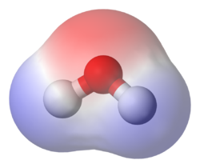
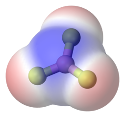
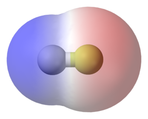

Polar Covalence
Polar covalent bonds undermine the sharing of electrons that categorizes covalence. In such a bond, one or more electrons are shared unequally between the nuclei they
orbit. The "dominant" atom is the one which has a higher electronegativity, and thus attracts foreign electrons with more force than said electrons' nucleus.
Polar Covalence and Substances
Polar covalent bonds most often in the formation of molecules. These molecules form an electric dipole In a hydrogen-fluoride bond, the fluoride has a higher electronegativity, which
leads to the shared electrons to be more likely found in the fluoride atom rather than in the hydrogen atom. Since electrons are negatively charged, the fluoride end of the molecule
is more negatively-charged than the hydrogen end. These differences in charge within a molecule cause weak but present intermolecular forces, as positively and negatively charged ends
make haste to align with one another. These forces give molecular compounds, especially those of organic nature, their surface tension, solubility, boiling and melting points, and physical
character, such as softness and bulk. Not all polar covalent molecules are dipoles. For example, carbon dioxide has a linear distribution of charge, resulting in no apparent separation of
positive and negatively-charged polar extremities. The same can be said about boron trifluoride.



Top-bottom: The aftermath of the polar covalent bonding of: water, boron trifluoride, and hydrogen fluoride. Note that all but boron trifluoride can be classified as polar molecules.
Hydrogen Dioxide
Hydrogen Dioxide, most commonly known as water, is used for a variety of purposes. The polar molecule is crucial to the maintenance of life, being used as a medium to transport molecules and wastes. Water is also
used, in its deuterium oxide form, is used as a medium to pipe out waste heat from nuclear reactors.
Water is recycled via the water cycle, in which water continuously accumulates, vaporizes, condenses, and accumulates again on Earth, through the sun's rays and atmosphere. The compound is self-
sustaining, yet originated from polar covalent bonding between the two most common elements on Earth - Hydrogen and Oxygen.
Ironically, an over-abundance of water in an organic system causes cells lacking strong cell walls to undergo cytolysis - bursting due to being swollen from an uptake of water greater than the water percentage around the cell.
A common hoax is achieved by calling water dihidrogen monoxide, the threatening nomenclature of which causes panic to those not experienced in the naming of chemical compounds. This hoax, while often thought up as original, has been
prevalent on April Fools' Day since 1983.